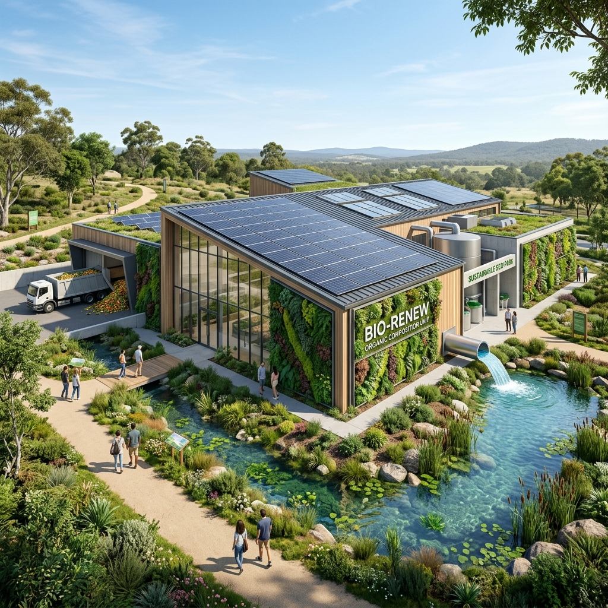

The Only Waste Product is Clean Water
How patented BioTC molecular compounding technology turns wet municipal sludge into dry, high-calorific Eco-Coal and clean water.
The Clean Water Paradox
We have cleaned our rivers, but we have poisoned our soil.
Every wastewater treatment plant does half of the job perfectly: it returns clean water to our rivers. But where does the dirt go?
Ecological Debt: Toxic Accumulation
Traditional treatment creates huge volumes of hazardous sludge. Storing it on fields or treating it with lime only masks the problem. It does not destroy microplastics, medicine residues, and PFAS ("forever chemicals"). They accumulate in the soil and eventually find their way back into our drinking water sources.
As environmental requirements tighten, municipalities face skyrocketing environmental fines, tighter transport controls, and bans on applying untreated sludge to fields. Sludge storage yards are full. The "clean water" cycle is broken because we leave a toxic footprint on land.
Wastewater
Purified to high standards for discharge into rivers
Toxic Sludge
PFAS, pathogens, and heavy metals accumulate on land
Zero Sludge. Energy-Positive.
We do not bury the problem. We recombine it.
Using advanced European BioTC molecular compounding technology, we pass wet organic feedstock through a closed thermal loop under high pressure. In just two hours, the structure of the substance is completely transformed.
Our patented HTC process does not burn waste — it "cooks" it under pressure, reproducing the natural coal formation process in a matter of minutes. This eliminates hazardous sludge volumes, turning your ecological liability into two valuable resources:
Eco-Coal
Sterile, odorless biofuel with a high calorific value (20–25 MJ/kg), equivalent to quality sub-bituminous coal. Can be used for heat generation or sold to industrial enterprises.
Clean Water
All bacteria, microplastics, and PFAS are thermally destroyed during the process, and the released process water is returned to the treatment plant cycle.
HTC Engineering Simulation Simulator
Try the interactive calculation: choose modes, enter values using keys or physical keyboard, and press ENTER.
Waiting for device start... Configure switches and enter values.
BioTC Installation Specifications
We offer three standard modular installations and custom two-stage solutions for facilities of any scale.
BioTC HTC-S 5
Compact single-line molecular compounding unit for small wastewater treatment plants and industrial enterprises.
- Daily capacity: up to 5 tons of dewatered sludge (~80% moisture)
- Annual throughput: up to 1,800 tons of feedstock
- Eco-Coal production: 350 - 400 tons/year
- Energy profile: Autogenous heat generation
- Operation mode: Continuous (24/7)
Quick Installation
Delivered as a block-modular container. Ready for connection in 14 days.
Space Saving
Does not require capital construction. Occupies only 120 sq.m.
Lego for Organic Molecules
Imagine organic sludge as randomly scattered Lego blocks. Under high pressure and temperature, our closed installation disassembles hazardous compounds and neatly reassembles them into stable, dry coal biofuel.
Feedstock Input
Wet organic sludge (~80% moisture), which has an unpleasant odor and poses an epidemic risk, enters the hermetic loop.
Thermal Loop
The reaction takes place at 200°C under 20 bar pressure in a fully closed environment. No chimneys or odor emissions.
Eco-Coal & Water
Dry Eco-Coal comes out as pellets, and clean water returns to the cycle. Raw feedstock volume is reduced by 75–80%.

The Power of the Integrated Loop: Why BioTC?
Other technologies solve the problem only halfway. BioTC is the only system that integrates thermal hydrolysis (TH) and hydrothermal carbonization (HTC) into a single energy-positive cycle.
| Indicator / Feature | Landfill disposal / Sludge lagoons | Competing THP solutions (Cambi, TerraNova) | BioTC Loop Patented |
|---|---|---|---|
| Sludge volume reduction | ❌ 0% | ⚠️ Up to 50% | ✅ Up to 80% |
| Pathogen & PFAS destruction | ❌ None | ⚠️ Partial | ✅ 100% destruction |
| Energy profile | 🔴 Constant costs | 🟡 Self-consumption | 🟢 Energy-positive |
| Biogas yield increase | ❌ 0% | ⚠️ +30% | ✅ +60% (liquate recycle) |
| Financial effect | 💸 Constant costs | ⚠️ Slow ROI | 📈 4-6 years payback |
Due to returning high-temperature liquate back to the digesters, the BioTC system stimulates anaerobic digestion, doubling the biogas output and allowing the station to sell excess heat and electricity.
Proven & Supported by Giants
We do not ask you to be a guinea pig. The transition from municipal environmental risks to clean energy has already been engineered and verified by leading partners.
Water Utility of Lubin (MPWiK Lubin)
🇵🇱In October 2025, the municipal water and sewage utility in Lubin (Poland) officially signed and acquired the copyrights for the implementation of the integrated TH-AD-HTC scheme from BioTheCon as part of Stage II modernization of the wastewater treatment plant.
AGH University of Krakow
🎓The patented process was developed in close cooperation with professors of thermal engineering and environmental engineering at AGH University in Krakow, supported by official state and national grants.
INTROL Group S.A. Holding
🏗️Engineering, construction, and integration of BioTC systems are performed by general contractor INTROL — a leading European construction and infrastructure holding, listed on the stock exchange since 1990.
The Cost of Waiting
Don't let your heritage slip away.
In a few years, environmental legislation will completely ban the landfilling of raw sludge, while carbon taxes and fines will skyrocket. Municipal and business leaders who delay will be forced to build expensive treatment systems in a hurry, using only municipal funds.
Those leaders who act today have access to environmental subsidies (covering up to 70% of capital investments) and will be able to proudly say to their community: “We stopped polluting our soil. We did it first, and we did it right”.
Free Feedstock Audit Process:
Submit a sample
We will conduct a chemical analysis of your sludge or industrial waste in our laboratory.
Get an audit report
Receive detailed indicators of Eco-Coal yield, water purity, and biogas stimulation.
Calculate payback & feasibility
We will prepare a preliminary feasibility study and calculate the payback periods for your facility.
Request for Free Audit & Feasibility Study
Fill out the form below. Our leading engineers will develop a preliminary technical and commercial proposal for you.